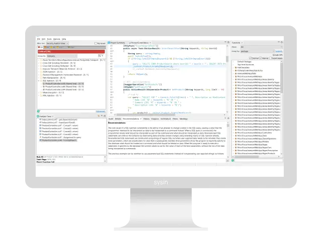

请访问原文链接：OpenText Static Application Security Testing (Fortify) 26.1 (macOS, Linux, Windows) - 静态应用安全测试 查看最新版。原创作品，转载请保留出处。
作者主页：sysin.org
OpenText 静态应用安全测试（Fortify）

以行业领先的准确性及早发现并修复安全问题
在 CI/CD 管道中自动实现安全性
传统的 SAST 工具通常需要调整和专业知识，会出现误报，让团队不堪重负。其他工具虽然易于使用，但会遗漏漏洞。OpenText™ Static Application Security Testing (Fortify) (SAST) 通过精确的漏洞检测、广泛的语言支持和无缝的 CI/CD 集成实现了 DevSecOps。人工智能驱动的洞察力可帮助开发人员确定优先级并高效解决漏洞 (sysin)，从而降低整个 SDLC 的安全风险。
为什么选择 OpenText 静态应用安全测试？
发现其他工具容易遗漏的关键漏洞。OpenText SAST 能与 GitHub、GitLab、Jenkins、Azure DevOps、VS Code、Eclipse 等无缝集成，在保持开发效率的同时尽早保护代码安全。
1,524+
已评估的漏洞类别
涵盖 44+ 种语言和超过一百万个 API。350+
已支持的框架
提供无与伦比的广度和灵活性，确保在多样化开发环境中实现全面的安全覆盖。94%
的 OpenText 用户表示
OpenText 静态应用安全测试帮助他们改进了应用安全计划。
关键特性
OpenText SAST 提供企业级代码安全能力，结合 AI 驱动分析、云原生支持和灵活的部署方式 (sysin)，帮助组织降低风险、简化合规，并大规模构建安全软件。
全面的语言与框架覆盖
支持 44+ 种语言、350+ 框架，并可检测源代码中的 200+ 种敏感信息，实现一致且全面的安全测试。灵活的部署选项
包括基于 SaaS 的 OpenText™ Core 应用安全测试平台、结合 SaaS 与本地功能的私有托管方案 (sysin)，以及完全离线的本地部署，确保对安全测试解决方案的完全掌控。集成基础设施即代码（IaC）扫描
在同一平台中提供一流的 IaC 与应用安全扫描，支持 Docker®、Kubernetes® 和无服务器架构，基于统一的核心引擎。AI 驱动的审计与修复
加速漏洞审计与检测，并自动生成 SAST 漏洞修复建议。新一代 SAST 引擎
覆盖 44+ 种语言、1,524+ 类漏洞、350+ 框架和超过 100 万个 API。
全面的语言与框架覆盖
OpenText SAST 为 44+ 种主流语言及其框架提供精准支持，由业内领先的软件安全研究（SSR）团队提供快速更新。
- Ada
- SAP ABAP
- Action Script
- Angular
- Apex
- Microsoft ASP
- Bash
- Bicep
- CSharp
- C++
- COBOL
- Cold Fusion
- Delphi
- Docker
- Elixir
- Erlang
- Go Lang
- Groovy
- HTML5
- Java
- Java Script
- JSON
- JSP
- Kotlin
- Lua
- MXML
- Net
- NETCore
- Perl
- PL/SQL
- PowerShell
- Python
- R
- Ruby
- Rust
- Scala
- Swift Trans
- T-SQL
- Terraform
- Type Script
- Microsoft Visual Basics
- Visual Basic
- Windows Mobile
- XML
- YAML
系统要求
这里列出操作系统部分，详细描述参看附带的文档。
macOS
- macOS Tahoe 26 (Not Listed)
- macOS Sequoia 15
- macOS Sonoma 14
Linux
Windows
- Windows Server 2025（OVF）(Not Listed)
- Windows Server 2022（OVF）
- Windows Server 2019（OVF）
- Windows 11
- Windows 10
新增功能
宣布推出 OpenText SAST 26.1，本次发布重点聚焦于性能、可扩展性以及广泛的语言支持。本次更新的核心是全新的 AI Analyzer，这是一项新一代能力，可显著加快新语言支持的开发速度，使安全团队能够以前所未有的敏捷性跟上现代开发技术栈的发展。详情参看官方文档和本站相关发布。
下载地址
历史版本：
链接：Fortify Static Code Analyzer 24.4 for macOS, Linux & Windows - 静态应用安全测试
- OpenText Static Application Security Testing (Fortify) and Tools 25.2, 2025-05
- OpenText Static Application Security Testing (Fortify) and Tools 25.3, 2025-07
- OpenText Static Application Security Testing (Fortify) and Tools 25.4, 2025-10
OpenText Static Application Security Testing (Fortify) and Tools 26.1 for macOS x64 (Intel 处理器)
OpenText Static Application Security Testing (Fortify) and Tools 26.1 for macOS arm64 (Apple 芯片)
OpenText Static Application Security Testing (Fortify) and Tools 26.1 for Linux x64
OpenText Static Application Security Testing (Fortify) and Tools 26.1 for Linux AArch64
OpenText Static Application Security Testing (Fortify) and Tools 26.1 for Windows x64
include Fortify-Rules-2026.1.0
相关产品：Gartner 应用程序安全测试 (AST) 魔力象限 2025
更多：HTTP 协议与安全

文章用于推荐和分享优秀的软件产品及其相关技术，所有软件默认提供官方原版（免费版或试用版），免费分享。对于部分产品笔者加入了自己的理解和分析，方便学习和研究使用。任何内容若侵犯了您的版权，请联系作者删除。如果您喜欢这篇文章或者觉得它对您有所帮助，或者发现有不当之处，欢迎您发表评论，也欢迎您分享这个网站，或者赞赏一下作者，谢谢！
 支付宝赞赏
支付宝赞赏  微信赞赏
微信赞赏赞赏一下
敬请注册！点击 “登录” - “用户注册”（已知不支持 21.cn/189.cn 邮箱）。 请勿使用联合登录（已关闭）。